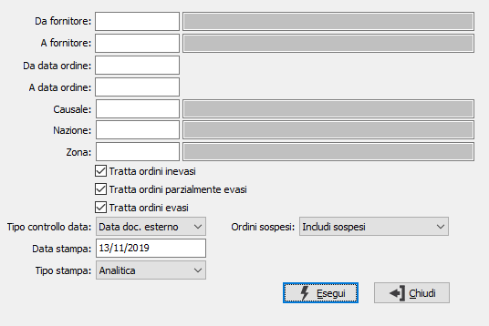

Verifica consegne
Il programma consente di verificare il rispetto dei tempi di consegna dei fornitori confrontando le date di prevista consegna con le data di effettiva consegna (derivanti dai documenti di arrivo merce); è possibile filtrare gli ordini da analizzare secondo diversi criteri compreso il fatto che l'ordine sia evaso, parzialmente evaso oppure inevaso.
Se è attiva la gestione degli ordini sospesi, è presente il campo "Ordini sospesi" che consente di specificare come elaborare tali ordini: Includi sospesi, Solo sospesi, Escludi sospesi.
E’ possibile ottenere sia un dato analitico in cui rigo per rigo ordine viene visualizzato l’eventuale ritardo accumulato sia un dato sintetico a livello di ordine in cui si evidenziano i giorni di ritardo dell’ordine rispetto alla data di consegna delle righe utilizzando la più lontana nel tempo. I giorni vengono calcolati in base alla data di stampa e possono essere rapportati alla data del documento del fornitore oppure alla data di registrazione del movimento stesso.
